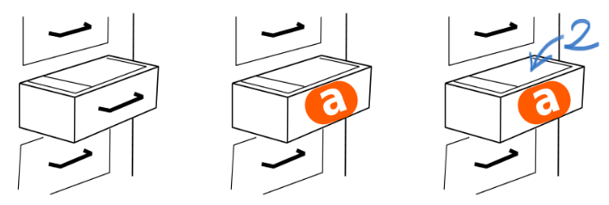
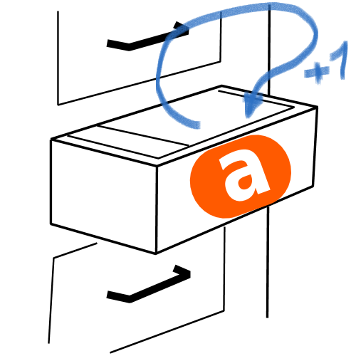
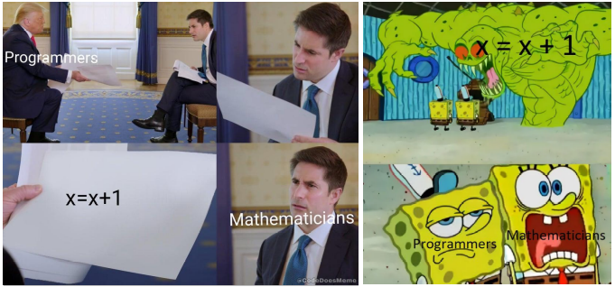
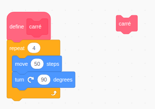
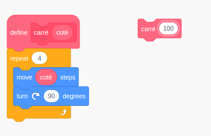

Cours de Python
1. Variables et affectation⚓︎
1.1 Stocker une valeur dans une variable⚓︎
La mémoire d'un ordinateur peut-être perçue comme un ensemble de tiroirs.
Écrire l'instruction :
1 | |
va provoquer chez l'ordinateur (en simplifiant beaucoup) le comportement suivant :
- Est-ce que je possède déjà un tiroir appelé
a?- si oui, je me positionne devant.
- si non, je crée un tiroir appelé
a.

- J'ouvre le tiroir et j'y dépose la valeur numérique 2. Si le tiroir contenait déjà une valeur, celle-ci disparaît. On dit souvent qu'elle est écrasée.
Remarque
Cette présentation est utile pour comprendre la notion de variable dans une première approche, mais elle n'est pas vraiment fidèle à la réalité.
Signification du signe =
Le sens du signe = n'est donc pas du tout le même qu'en mathématiques. On dit que c'est un signe d'affectation.
L'écriture a = 2 signifie donc a ← 2 et peut se lire «a reçoit la valeur 2» ou encore «on affecte à a la valeur 2».
Remarque
Ici, nous avons stocké un nombre (le nombre 2) dans la variable a. Mais une variable peut contenir une phrase, une liste de nombres, une image... beaucoup d'objets de type différent.
1.2 Récupérer la valeur stockée dans une variable⚓︎
1.2.1 Dans un script⚓︎
Dans un script Python, pour afficher le contenu d'une variable, on utilisera la fonction print().
1 2 3 4 | |
renverra la sortie suivante :
1 2 | |
1.2.2 En console⚓︎
Dans la console interactive de Python, c'est encore plus simple, il suffit d'écrire le nom de la variable et d'appuyer sur Entrée.
1 2 3 4 5 6 7 8 | |
Bien sûr, il faut que la variable ait été créée au préalable... sinon Python renvoie un message d'erreur.
1.3 Modifier le contenu d'une variable⚓︎
1.3.1 Écraser une ancienne valeur⚓︎
Comme déjà évoqué, affecter une nouvelle valeur dans une variable déjà existante écrasera l'ancienne valeur. C'est très pratique, mais parfois dangereux.
1 2 3 4 5 6 | |
1.3.2 Utiliser des variables pour calculer de nouvelles variables⚓︎
1 2 3 4 | |
Remarque
En Python, la puissance s'obtient par **. La racine carrée est une puissance 0.5.
1.3.3 Modifier une variable à partir d'elle-même⚓︎
L'instruction
1 | |
a se modifie à partir d'elle-même.

1 2 3 | |
renverra
1 | |
La compréhension de l'instruction a = a + 1 est essentielle.

1.3.4 Inverser deux variables⚓︎
Imaginons les variables suivantes :
1 2 | |
Il semblerait qu'une erreur se soit glissée dans ces déclarations de variables... Mais comment faire pour inverser les valeurs ?
▸ Méthode naïve
1 2 | |
1 2 3 4 | |
En effet, la variable maisonHarry a été écrasée... et on ne peut plus retrouver sa valeur pour la donner à maisonMalfoy.
▸ La solution universelle
Nous allons passer par une variable temporaire qui nous permettra de stocker la valeur écrasée.
1 2 3 4 5 6 7 8 | |
Ainsi,
1 2 3 4 | |
▸ La solution «pythonesque»
Chaque langage de programmation ayant ses particularités, Python propose une syntaxe particulièrement agréable pour pouvoir faire l'échange de deux variables sans faire intervenir une variable temporaire :
1 2 3 4 5 | |
1 2 3 4 | |
Les variables ont bien été échangées.
Remarque
Python ne fait que nous faciliter le travail. Il a dû lui-même créer une variable temporaire pour stocker la variable a avant de l'écraser : la simultanéité n'existe pas en informatique !
1.4 Jouer avec les variables⚓︎
L'objet de l'activité est de prendre un code pré-existant, produisant une animation graphique, et de le modifier petit à petit pour comprendre le rôle de chaque élément.
Dans la fenêtre ci-dessous, cliquer sur le bouton Play pour démarrer l'animation.
Vous pouvez coder directement dans la fenêtre ci-dessus, ou bien ouvrir ce lien dans une nouvelle fenêtre (clic-droit «Ouvrir le lien dans une nouvelle fenêtre) afin de pouvoir avoir les instructions et la fenêtre de code côte-à-côte.
1.4.1 Quelques indications sur le code d'origine⚓︎
background(r, g, b): l'arrière-plan sera de la couleur(r,g,b), oùr,getbsont des nombres compris entre 0 et 255, déterminant les composantes rouge, verte et bleue de la couleur totale. Voir ici .-
size(x,y): l'espace de dessin mesureraxpixels de large surypixels de haut. -
frameRate(n): l'animation sera rafraîchienfois par seconde. -
noStroke(): les futurs tracés n'auront pas de contour. -
fill(r, g, b): les futures figures tracées seront remplies avec la couleur(r,g,b). -
randint(a,b): renvoie un nombre pseudo-aléatoire entreaetb. -
ellipse(x, y, rayon, rayon: trace un disque de centre(x, y)et de rayonrayon.
1.4.2 Manipulations à effectuer⚓︎
- Modifier alternativement les paramètres
rayon,r,goubafin d'observer et comprendre leur rôle. . - Modifier le
frameRatepour observer son rôle. - Faire en sorte que les disques dessinés soient de couleur aléatoire.
- Faire en sorte que les disques soient de rayon aléatoire.
- Les instructions
mouseXetmouseYrenvoient respectivement l'abscisse et l'ordonnée de la souris. Faire en sorte que les disques se dessinent là où se trouve la souris. - Trouver d'autres figures à tracer à cette adresse et laisser parler son talent artistique...
1.5 Vers les tests...⚓︎
Lien vers l'activité pour une utilisation dans une nouvelle fenêtre.
L'objectif est de faire bouger la balle... puis la faire rebondir !
1.5.1 Mouvement de la balle⚓︎
Pour l'instant la balle est statique. Du moins elle apparaît statique, mais elle en fait redessinée au même endroit 25 fois par seconde !
- Comment faire en sorte qu'à chaque tour de boucle (25 fois par seconde donc) la balle ne soit pas redessinée au même endroit, mais légèrement décalée vers la droite ?
- Résoudre le problème de superposition des anciennnes balles afin de donner l'illusion d'un mouvement
- Stocker dans une variable appelée
dxle décalage de l'abscisse.
1.5.2 Rebond de la balle⚓︎
Pour l'instant, notre balle s'enfuit désespérément... Comment détecter qu'elle est sortie de son aire de jeu ?
2. Instructions conditionnelles⚓︎
Un ordinateur ne fait pas que stocker des valeurs dans des variables et les faire évoluer. Il effectue aussi des tests pour déclencher (ou pas) d'autres actions. On parle alors d'instructions conditionnelles.
2.1 Premier test élémentaire⚓︎
La syntaxe d'un test en Python est la suivante :
1 2 | |
Exemple
1 2 3 | |
j'ai faim car la condition est validée. On dit que la condition est «vraie».
2.1.2 Le retour de la balle fuyante⚓︎
- Détectez que la balle est sortie en faisant apparaître le mot "sortie..." en console (le mot apparaîtra sous la zone de dessin).
- Modifiez le code pour que la balle reparte dans l'autre sens au lieu de s'enfuir.
Point d'étape
- Faites rebondir la balle sur les deux murs
- Faites en sorte que la balle n'ait plus qu'un simple mouvement latéral mais un mouvement «de travers»
- Gérez les rebonds, rajoutez de l'aléatoire...
Voir un exemple de correction, ici : https://trinket.io/library/trinkets/05b7d7f7c3... et amusez-vous à modifier ce code !
3. Les fonctions en Python⚓︎
3.1 Principe général : à quoi sert une fonction ?⚓︎
L'idée principale qu'il faut garder en tête est celle-ci : une fonction est un raccourci, permettant une utilisation simple et rapide d'un processus répétitif.
Par exemple, en Scratch, si on sait que l'on va avoir à tracer beaucoup de carrés, on crée un bloc carre :

Il est à noter que lorsqu'on créé le bloc carre, rien ne se passe, rien n'est tracé. Ce n'est que lorqu'on va se servir de ce bloc (on dira qu'on appelle le bloc) qu'une action aura lieu.
Pour faire un parallèle avec la vie courante, vous avez tous appris un jour à faire vos lacets. C'est une fonction (un ensemble de gestes et de techniques) qui est disponible et dont vous ne vous servez que lorsque vous en avez besoin (quand vos lacets sont défaits).
3.2 Premières fonctions en Python.⚓︎
Une fonction en Python se déclare par le mot clé def.
1 2 3 4 | |
À remarquer : - les parenthèses à la fin du nom de la fonction (indispensables) : elles contiendront plus tard les paramètres de la fonction. - le deux points : à la fin de la déclaration du nom de la fonction. Ils vont déclencher une indentation automatique du reste du corps de la fonction.
Utilisation :
1 2 3 4 | |
Cette fonction n'a aucun paramètre d'entrée. Elle affichera toujours la même chose lorsqu'on l'appellera.
3.3 Paramètres d'une fonction⚓︎
L'inconvénient majeur des fonctions précédentes est qu'elles produisent toujours la même chose.
Le carré en Scratch fera toujours 50 pixels de côté, l'hymne affiché sera toujours l'hymne anglais...
Pour améliorer ceci, il est possible de donner à la fonction un (ou plusieurs) paramètre(s).

La fonction carré() comporte maintenant un paramètre, qu'on a appelé coté, mais qu'on aurait pu appeler n, x, ou djhfidshflsdm. Cela n'a aucune influence sur le fonctionnement du code. Mais ça en a une sur la compréhension de celui-ci ! On choisira donc toujours un nom explicite.
Lorsqu'on appelle ensuite la fonction carre(100), la fonction est exécutée avec à la place de la variable coté la valeur 100. Elle trace donc un carré de côté 100.
En Python, créons par exemple une fonction hymne(pays) :
1 2 3 4 5 6 7 8 9 10 | |
Notre fonction comporte maintenant un paramètre qui va influer sur l'action de la fonction :
1 2 3 4 5 6 7 8 9 10 11 12 13 14 | |
À remarquer :
- L'utilisateur de la fonction peut utiliser la fonction hymne() avec des valeurs du paramètre paysnon prévus par le programmeur. Dans notre cas, cela n'est pas grave (il ne se passe rien), mais parfois cela peut provoquer une erreur.
3.4 Fonctions utilisant d'autres fonctions⚓︎
Le code précédent peut aussi s'écrire de cette manière :
1 2 3 4 5 6 7 8 9 10 11 12 13 14 15 16 | |
Ce type d'écriture de code (qu'on appellera écriture modulaire) est une bonne habitude à prendre car elle sépare les différentes actions en fonctions spécifiques. Si je dois rajouter un vers à l'hymne français, je vais uniquement toucher à la fonction hymne_francais(), et pas aux autres fonctions qui ne sont pas concernées.
3.5 Fonctions renvoyant une valeur⚓︎
⚠ Très important ⚠
Jusqu'à présent, les fonctions utilisées étaient uniquement des «raccourcis» permettant de mieux structurer le code et d'éviter les répétitions.
Or, les fonctions peuvent être encore plus intéressantes lorsqu'on comprend qu'elles peuvent renvoyer une valeur. On s'approche alors de la définition mathématique du concept de fonction.
Le mot-clé pour le renvoi d'une valeur est l'instruction return.
Exemple :
1 2 3 | |
À l'utilisation, cette fonction ne semble pas pour l'instant différente des précédentes :
1 2 3 | |
Ce qu'il faut absolument comprendre, c'est que aucarré(4) est en fait un nombre.
Et donc, je peux l'utiliser dans des calculs :
1 2 | |
3.6 Application à un exercice classique de mathématiques⚓︎
Imaginons deux tarifs A et B pour le prix d'un ticket d'entrée au cinéma. - Tarif A : 7 € la place - Tarif B : 13 € l'abonnement puis 5 € la place
Pour un nombre n d'entrées, quel est le tarif le plus avantageux ?
- Créer une fonction
tarif_A(n)qui renvoie le prix pournentrées au tarif A. - Créer une fonction
tarif_B(n)qui renvoie le prix pournentrées au tarif B. - Créer une fonction
meilleur_choix(n)qui écrira"il faut choisir le tarif A"ou bien"il faut choisir le tarif B"en fonction du tarif le moins cher. Cette fonction ne renverra aucune valeur.
Correction
1 2 3 4 5 6 7 8 9 10 11 12 13 14 15 | |